第 88 课必要图示重绘对照
PDF 与印刷第 29–31 页。示意图只校对数学信息，图形等距排版不表示原书规定了比例。折线重合段用两色实线与虚线叠加，两条线的坐标相同。
第 2 题 · m02-same-direction
原书裁图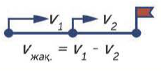
首次重绘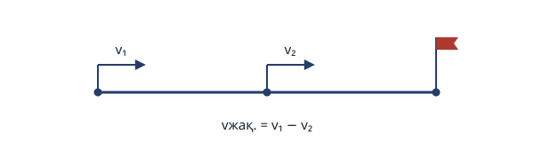
最终重绘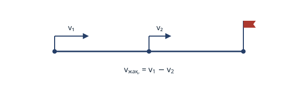
两箭头均向右，起点分别在后、前，旗标在最右。第二版显式标出公式的接近速度下标。
第 2 题 · m02-toward-each-other
原书裁图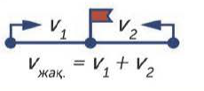
首次重绘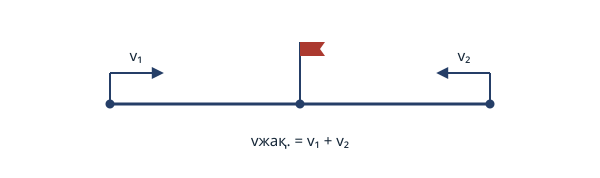
最终重绘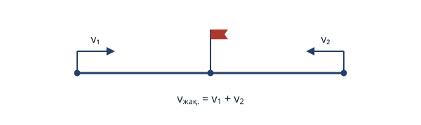
两箭头由外侧向内，旗标在中点。第二版显式标出公式的接近速度下标。
第 2 题 · m02-apart
两箭头共用中央起点并背向，原图无旗标。第二版显式标出公式的远离速度下标。
第 3 题 · m03-motorcycles
原书裁图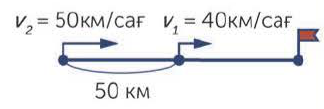
首次重绘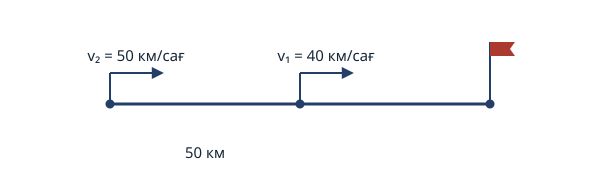
最终重绘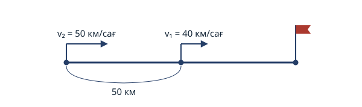
保留后方 v₂ 与前方 v₁ 的对应、最右旗标，并显示只跨两个起点的 50 千米括线。
第 4 题 · m04-vehicles
原书裁图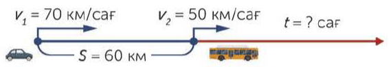
首次重绘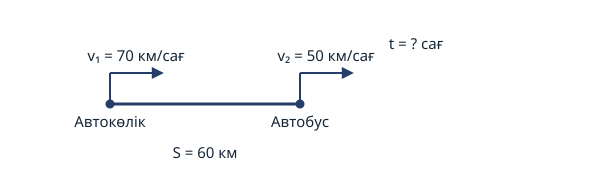
最终重绘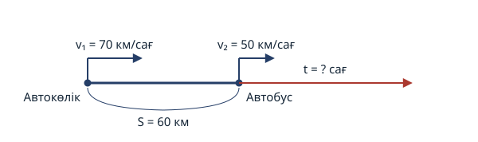
明确 60 千米括线的两端，以及从公交车起点向右延伸、上方标未知时间的红箭头。
第 5 题 · m05-distance-time
原书裁图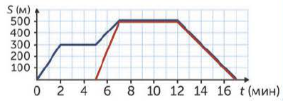
首次重绘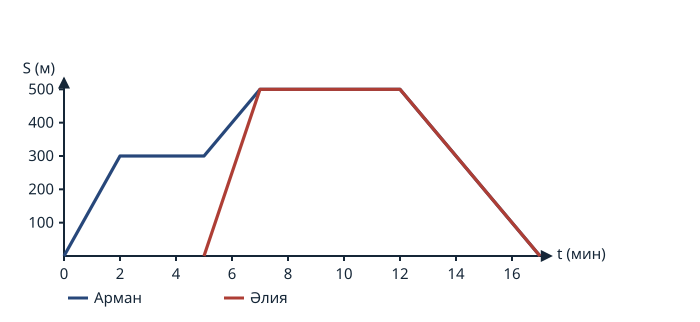
最终重绘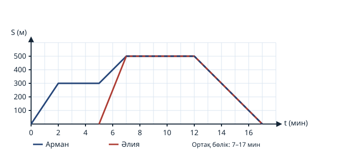
横向每小格 1 分钟，纵向每小格 100 米。标数与小格分开记录，7–17 分钟重合段用叠线表示。